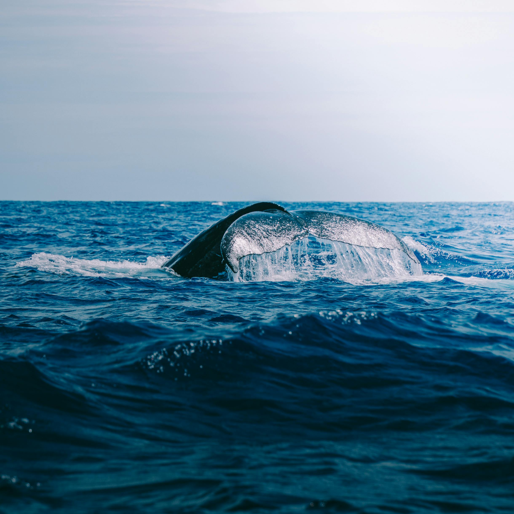
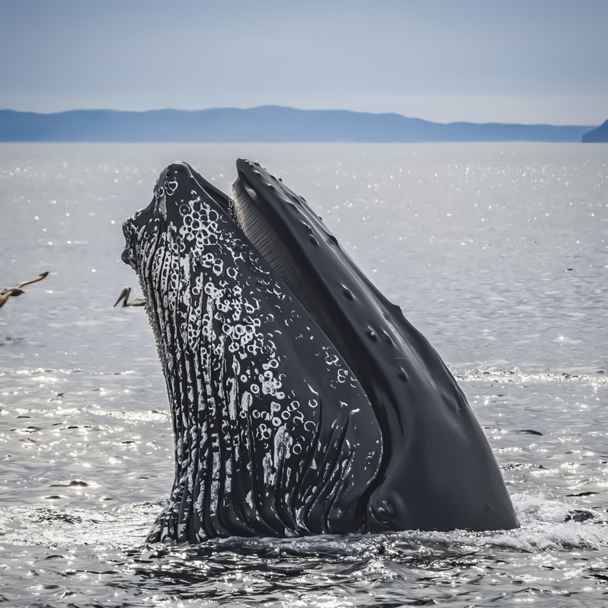
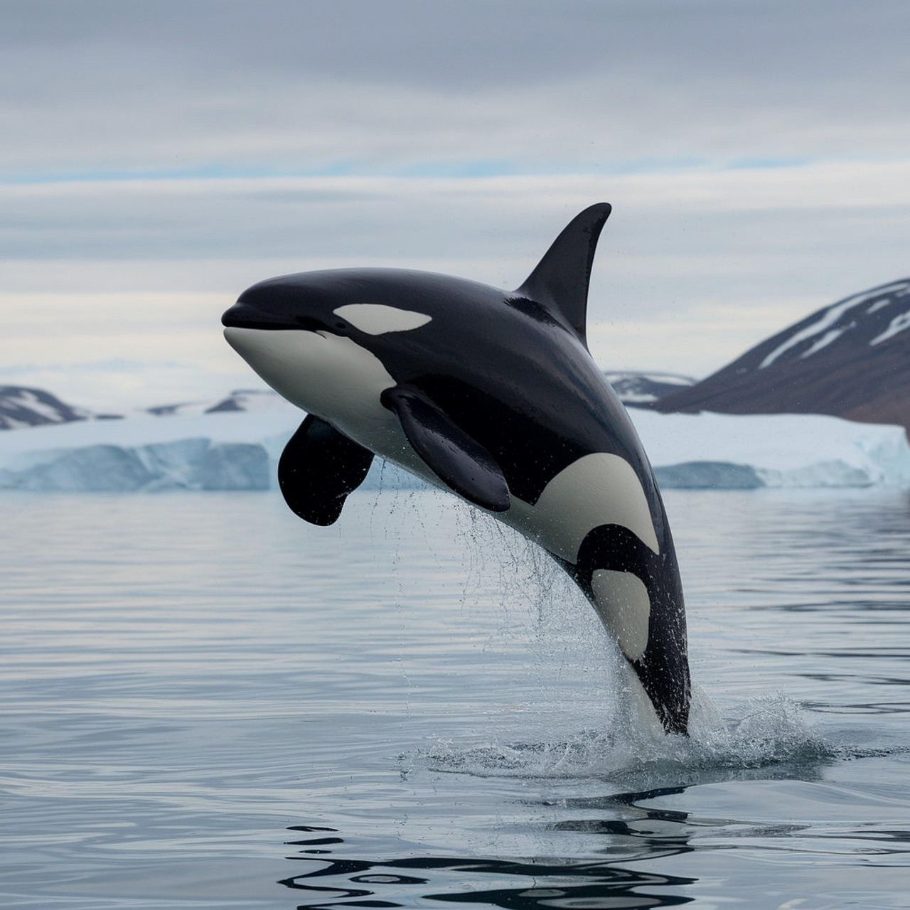

Whale-E
Welcome to our whale website, a place where we recognize and celebrate the incredible whale species that live in our oceans.
Whales are some of the most fascinating and important animals on Earth, playing a vital role in keeping marine ecosystems healthy.
Whether you are here to explore, learn, or simply admire the beauty of whales, this site aims to help you discover the amazing world of these giants of the sea.
Whether you are here to explore, learn, or simply admire the beauty of whales, this site aims to help you discover the amazing world of these giants of the sea.

It's estimated that there were over 225,000 Antarctic blue whales before their exploitation in the 1900s. Today, there are estimated to be less than 2,000 Antarctic blue whales left in the world.

There are two types of whales!The baleen whales and the toothed whales. Baleen whales have 'baleen' plates in their mouths instead of teeth.
Amazing!

Orcas, also known as "killer whales", are imposters and not actually whales!They are actually the largest members of the dolphin family!
Our planet is dying. Whales will be extinct before we ever get to know them. They say these creatures are so intelligent. They may disappear from the face of the Earth before we know them, and that is a great tragedy.
Subscribe to our daily email and stay up to date with fun whale facts!